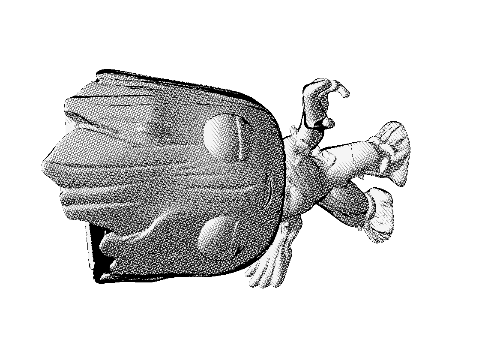
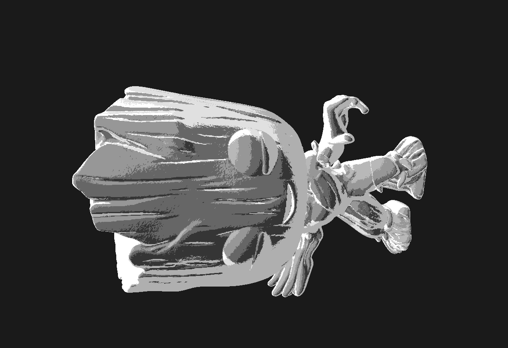
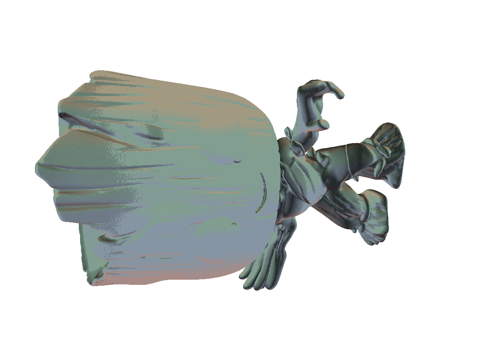

So far, we've made solid progress on two main components of our project. First, we built a basic custom GUI that allows us to load shaders. Second, we’ve developed a nearly complete sketch shader, which builds on HW4 to ensure reliability before integrating into the custom GUI. We've also improved the overall shading for better visual effects. However, the cel and watercolor shaders still require significant work—especially cel shading, which needs to be tested on models beyond just a sphere.
Preliminary Results

Sketch shading

Cel shading

Watercolor shading
Reflection On Progress
While we have a basic implementation for all 3 shaders and the custom GUI, the shaders lack depth and shadowing, and the GUI needs more refinement. Out of all our shaders, the sketch shader is the closest to the final product. As for the cel/toon shader, it is slowly getting there, but the bands could be more discrete to give a crisper look. Watercolor shader needs work - we need to look into environment bleeding to create the overlapping colors effect that watercolors produce.
Updated Timeline
Schedule
As far as what we planned, we seem to be on track. Main focus: refine and integrate.
Week 2 (4/13 - 4/19)
Start work on all 3 shaders (team divided accordingly).
Have something preliminary rendered images that somewhat resembles the shader
Color
Shadows Stylized for each shader
May be harder for sketch
Graded milestone due on 4/20.
Week 3 (4/20 - 4/26)
Continue developing shaders, make couple more features done
More specific to each shader
Cel Shading:
Rim Lighting
Specular Reflection
Watercolor Shading:
Pigment Blending
Texture Overlay
Variable Transparency
Sketch Shading:
Integrate various hatching/sketching techniques.
Week 4 (4/27 - 5/3)
Finish work on shaders from previous week on 4/30 and Finalize shader development.
Work on the project report and create a demonstration video.
Week 5 (5/4 - 5/5)
Submit final deliverables (report / video) on 5/4.